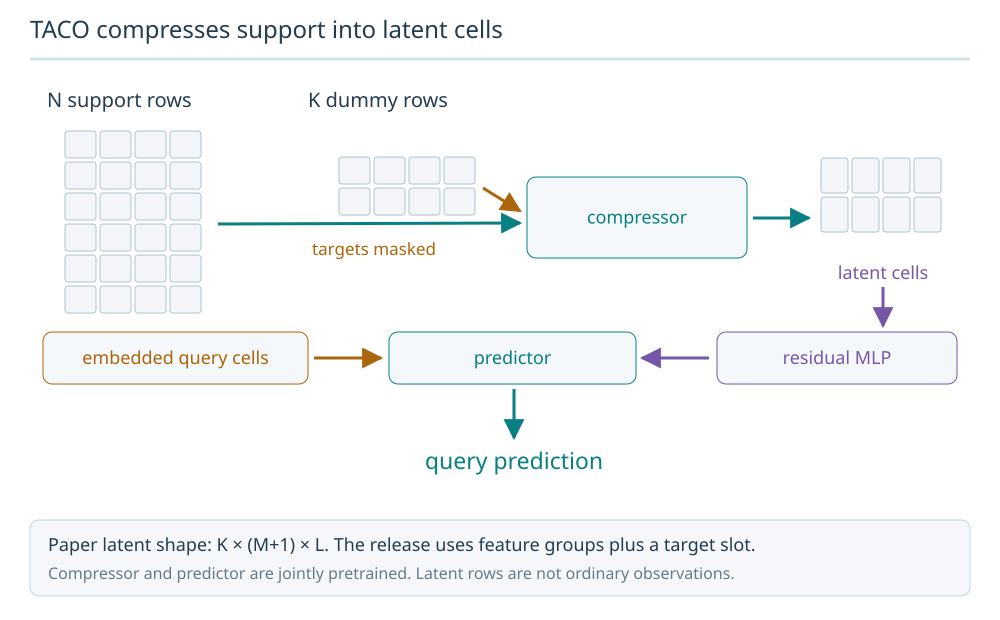
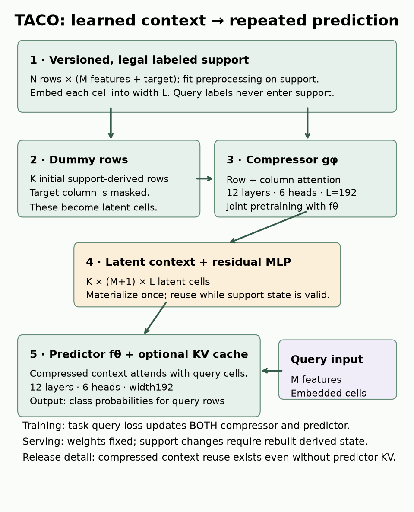
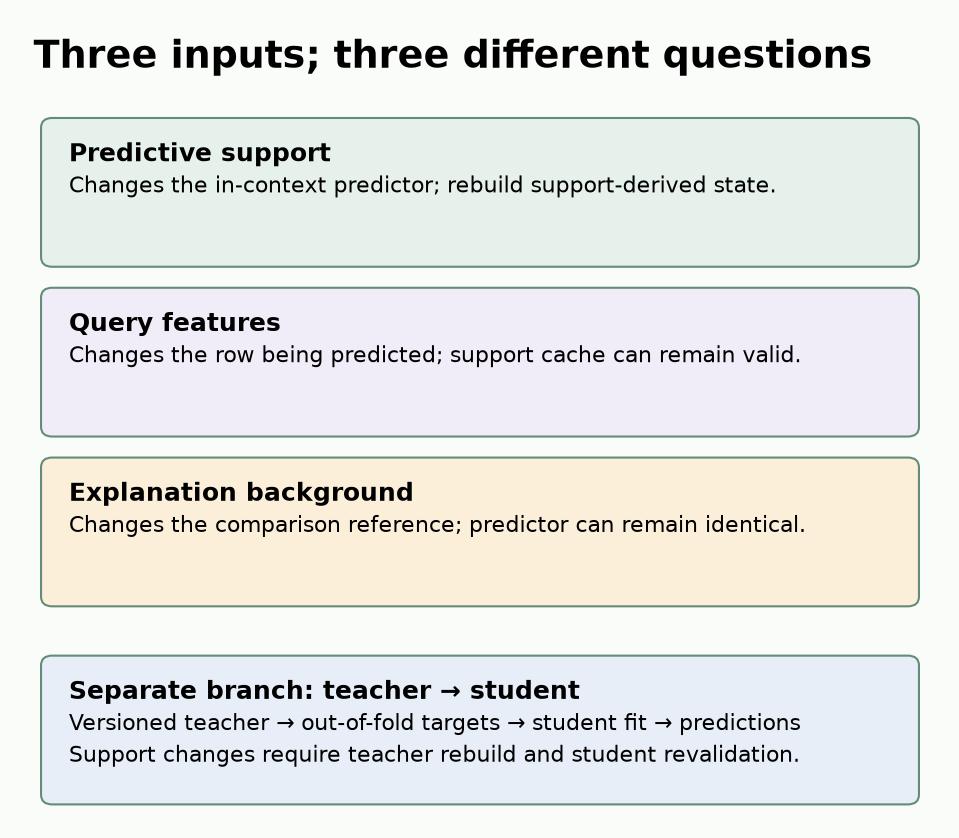

B18a · Context as deployed model state¶
Research bridge · Core ★ · 30-minute lesson + 45-minute lab
B18 showed that omitted history can remove information a predictor needs. Now suppose you have chosen that history carefully—and someone corrects a support label tomorrow. What has changed if the model weights are identical? The prediction system has changed. This lesson turns that observation into a versioned serving contract, so a relational-model comparison remains reproducible after deployment.
Your win: identify which artifacts a support update invalidates, measure the cost of rebuilding them, and explain a prediction without confusing predictive support with explanation background. Recall L186's serving contract and the difference between training, validation and test data. Here, support means labeled examples supplied to an in-context predictor; query means a row whose label is hidden from that predictor.
Student notebook · Executed solution · Download solution · Printable reference · Reproduction contract · Measured evidence
1 · Fixed weights do not identify a predictor¶
Before reading further, answer from memory: which records are legal at a prediction cutoff? Does an old event date guarantee that its label was known? Can a full aggregate answer every future question about its source rows?
Write the deployed prediction as:
p = f(weights, fitted preprocessing, ordered support, retrieval rule, inference recipe; query)
A cache is a derived artifact of part of this state. It is valid only while its dependencies agree. Record checkpoint hash, fitted preprocessing identity, support IDs/features/labels/order, retrieval policy, ensemble transforms, compression setting, precision and implementation version. A file named latest-cache is not an identity.
Worked trace. Support row 17 has event day 2, arrival day 3 and label availability day 9. At cutoff day 5 it cannot be a labeled support example. At day 10 it can. With unchanged weights, adding that example may change predictions. After a deletion request, predictions can also remain numerically unchanged; that does not authorize retaining the deleted row in a cache.
Our identity function hashes the actual support values and label array, not only filenames. Its NaN mask distinguishes missing from numeric zero. Hashing records identity, not truth: incorrect availability metadata can still be faithfully hashed. The notebook makes you implement the eligibility and identity functions, then attacks both.
2 · Four different ways to reduce repeated work¶
| Mechanism | What is retained? | What must be learned or rebuilt? |
|---|---|---|
| Predictor KV cache | Attention keys/values for support | Recompute dependent tensors after support/preprocessing changes |
| Support selection | A subset of original labeled rows | Rerun selection when its inputs or policy change |
| TACO compression | Learned latent context cells | Jointly pretrained compressor/predictor; recompress changed support |
| Distilled student | A separate predictor's parameters | Regenerate teacher targets and refit when the approved teacher state changes |
Caching aims to reuse the same computation. Selection and compression can change the information represented. Distillation fits another function to teacher outputs. None guarantees preserved accuracy. TabPFN-2.5 describes distillation into MLP/tree predictors; our lab executes TACO compression, not that separate distillation benchmark. TabPFN-2.5 report
Trace TACO's actual architecture¶
TACO compresses support into latent cells
Support cells and K dummy rows enter the compressor. The resulting latent context passes through a residual MLP to the predictor alongside embedded queries. Compressor and predictor are pretrained together.
On a narrow screen, scroll the drawing sideways or enlarge it. Arrow keys scroll when the drawing is focused.

Predict: Are the K compressed rows ordinary sampled observations?
No. They are learned latent cell representations. The paper uses K×(M+1)×L; the pinned checkpoint groups features, so its feature axis is groups plus the target slot.
Answer: No. They are learned latent cell representations. The paper uses K×(M+1)×L; the pinned checkpoint groups features, so its feature axis is groups plus the target slot.



A support table with N rows and M features plus a target column is cell-embedded. The compressor receives those cells and K dummy rows, initialized from support rows with their target column masked. Row and column attention transform the dummy cells into K × (M+1) × L latent context, not K ordinary observations. A residual MLP connects that context to the predictor; embedded query cells join the predictor input. Query labels stay hidden. The compressor and predictor are meta-trained together on prediction tasks. TACO is therefore not established as a universal compressor for arbitrary frozen TabPFN weights. TACO §3
For N=284 and a requested 4% rate, do not silently assume the exact K: the implementation rounds and preprocessing may expand/change feature dimensions. Inspect the actual model's K values in the saved records. The paper uses 12 layers, six heads and width192 in each module. The released checkpoint groups two input features per token, so its latent feature axis is groups-plus-target rather than literally M+1; its non-chunked compressor uses the final K preprocessed support rows as dummy features. Keep the paper diagram and release details distinct. Model-specific source code, including dummy initialization, cell attention, the residual projection and predictor calls, is archived with this lesson. Pinned source
Release detail: fit_preprocessors can already retain TACO's compressed context. Our cache switch adds predictor KV caching; it does not switch every cache off. The source cache key includes shape/configuration but does not hash every support value. We create a fresh estimator for each changed support state instead of trusting an in-place edit to invalidate it.
3 · Predict which artifacts become stale¶
Predict first: which artifacts need work?
Validity follows identity, even when the predicted number is unchanged.
Changing only query features normally preserves support-derived caches but changes the prediction and explanation. Changing only explanation background preserves the predictor, while invalidating the explanation result. Changing support labels invalidates preprocessing or downstream caches according to their dependencies; for a conservative contract, rebuild the entire fitted estimator. A distilled student may still run, but it no longer represents the new teacher state until checked or rebuilt.
Support updates have chronology. At time t, include only rows whose event, arrival and label-availability times are at most t. For a distilled student, the teacher context used to label student row i must exclude i's own label. Use out-of-fold teacher targets; when chronology matters, each fold may see only earlier available labels. A random fold does not repair future-label leakage. We specify this boundary here; no student is trained in this lesson.
4 · Measure quality, setup and reuse together¶
The frozen B18A-CONTEXT-STATE experiment uses the full breast-cancer table: 284 support rows and 285 held-out query rows, split seed42. A fixed stratified 71-row subset supplies the selected-context POT arm. Three inference seeds × three arms × two predictor cache modes give 18 fits. Each model sees the same queries in six batches (50,50,50,50,50,35), for one first pass and three repeated passes. Eight ensemble members and float32 are fixed before scores. Exact commands and source identities
| Arm | KV | AUROC mean | Log loss mean | Fit s mean | Repeated pass s mean |
|---|---|---|---|---|---|
| POT-full | off | 0.9932 | 0.0852 | 0.2098 | 2.0810 |
| POT-full | on | 0.9932 | 0.0852 | 1.0076 | 2.0926 |
| POT-selected | off | 0.9896 | 0.1235 | 0.1443 | 1.2839 |
| POT-selected | on | 0.9896 | 0.1235 | 0.4911 | 1.6426 |
| TACO4 | off | 0.9917 | 0.0876 | 0.2584 | 1.2707 |
| TACO4 | on | 0.9917 | 0.0882 | 2.4880 | 0.9815 |
All 18 fits completed. Cached/uncached agreement at the predeclared1e-5 tolerance: 6/9 pairs pass. Failed pairs: TACO4 seed0 Δ=0.0280723, TACO4 seed1 Δ=0.0319225, TACO4 seed2 Δ=0.0279807. Keep this failure visible; these modes are not interchangeable to the declared tolerance. Three repeated query passes measure warm reuse; they are not independent predictive trials.

Cache equivalence failed for TACO. All three TACO pairs exceed the predeclared tolerance. Source inspection shows different encoder-statistics inputs: the ordinary path uses N support rows, while the cached non-chunked path uses N−K under its default setting. This is a plausible contributor, not a proven sole cause; we did not patch the release or rerun a modified algorithm. Its timings cannot establish an equal-prediction speedup. Source-path audit
Read these comparisons carefully. POT and TACO have separately pretrained weights: their score gap cannot isolate the effect of compression. Three inference seeds on one split are not three independent datasets. This is a small diagnostic workload, not the paper's large synthetic speed test or evidence of clinical utility. Download and image-build time are outside fit/predict timing but inside the budget ledger.
For B prediction batches, use C(B) = setup + sum(batch costs) + update/rebuild costs + explanation costs. A cache that helps after many batches can lose when support changes every few queries. The usual break-even formula (setup_cached−setup_plain)/(per_batch_plain−per_batch_cached) only applies when steady per-batch savings are positive and the state remains fixed. Measure the actual workload; do not extend a six-batch timing line to a million requests as if hardware and update frequency were constant.
5 · Change state and inspect the consequence¶
The update experiment uses 283 baseline support rows and reserves one more support row for an addition. It compares fresh cached models after addition, deletion, a deliberately flipped label and a units change applied consistently to support and queries. The test rows stay fixed. A missingness fixture sets feature0 to NaN on 57 queries; this is an imposed shift, not a claim about the dataset's natural missingness.
| Model | State edit | Maximum probability change | Rebuild s |
|---|---|---|---|
| POT-full | query_missing | 0.043902 | 0.000 |
| POT-full | add | 0.008598 | 0.733 |
| POT-full | delete | 0.034017 | 0.653 |
| POT-full | label | 0.116220 | 0.674 |
| POT-full | units | 0.045465 | 0.692 |
| TACO4 | query_missing | 0.039553 | 0.000 |
| TACO4 | add | 0.028319 | 3.372 |
| TACO4 | delete | 0.037648 | 3.319 |
| TACO4 | label | 0.219546 | 3.380 |
| TACO4 | units | 0.034342 | 3.229 |
Query missingness has no support rebuild; zero rebuild seconds means reuse, not a free prediction.
A difference from the baseline measures sensitivity to this chosen edit. It does not tell you whether the edit was correct or whether a real deployment would improve. A zero difference also does not make stale state valid. The evidence saves both actual predictions and identities so these two checks remain separate.


6 · Explain the predictor you actually deployed¶
Keep three inputs separate: query, predictive support, and explanation background. The first is being explained; the second defines the in-context predictor; the third defines a reference distribution for an explanation method. Interpretable Machine Learning for TabPFN
Our deliberately simple estimand for feature j is:
contrast_j(x; B) = f(x) − mean over b in B of f(x with feature j replaced by b_j)
Hold support fixed. If f(x)=x₀+2x₁, x=[4,2], and background feature0 values are1 and3, the contrast is8−mean(5,7)=2. Changing the background values to3 and5 makes it0, without changing f(x). This arithmetic is a reference comparison, not proof that changing feature0 causes an outcome change.
The model experiment evaluates 16 fixed queries against two train-only backgrounds of eight rows. Each background costs 16 original plus 128 replaced predictions: 144 prediction rows, split into measured batches. Actual feature combinations can be off-distribution. We report this replacement contrast, not SHAP or LOCO. Query edits and predictive-support edits answer different questions and have their own measurements. The notebook makes you implement this contrast and verify every saved explanation from raw probabilities.
7 · What has been reproduced?¶
The historical B18A-TACO-FIG3 lane targets 15,000 support rows, 500 features and 100 batches of 50 queries. Its generator/data identity, seeds, checkpoint mapping and original timing protocol are unresolved in the archived release. The source gate refuses execution. Full pretraining, 26/36-dataset paper benchmarks and the TabPFN-2.5 distillation benchmark remain NOT_RUN. A fresh replacement generator would define a new experiment, not recover the original one. Paper Figure3
Exit · defend a serving contract¶
Without notes, draw support → preprocessing → compressor → predictor/cache and add the separate teacher → student branch. Then write 150–200 words: name every identity needed to replay one prediction; trace a late label correction; distinguish background edits from support edits; and propose a falsifiable quality/cost hypothesis with an update frequency for B23/B24. Explain one numerical result and one limit of this experiment.
Ask your teacher follow-up questions about any unclear boundary or failed notebook check. Revisit the three distinctions tomorrow, in a week and in a month. Completing the author run does not complete your written defense. Next: B19's benchmark-comparability plan.